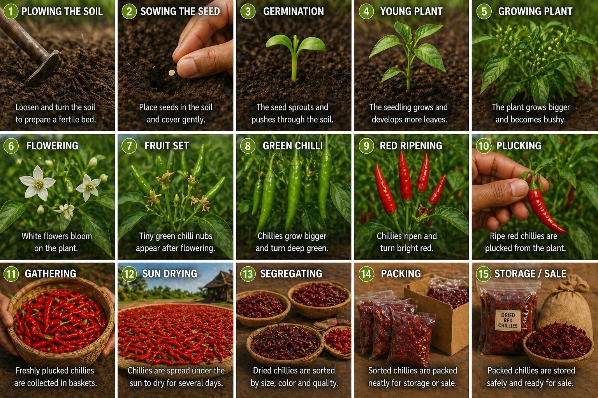

How Indian chillies are processed for export

A common question from first-time importers: why does a 10 MT chilli order take 18 to 30 days to ship from India when "the chilli is sitting in the warehouse"? The answer is that the chilli sitting in the warehouse is, in most cases, not yet export-grade. There are seven distinct steps that separate a domestic-grade lot from one that will clear phytosanitary inspection at a foreign port.
This piece walks through each one. If you've ever had a container detained at destination because of moisture or aflatoxin, or had a buyer reject a sample for "off colour," the cause is almost always a step skipped here.
Step 1 — Source the right lot
Procurement is the unglamorous foundation of everything else. A clean, evenly-coloured, evenly-dried lot from a contract farmer is a starting point that 90% of the rest of the process depends on. A patchy, mixed-grade lot from an open auction will need so much remediation later that it's usually cheaper to walk away.
At Vijaya Enterprises we work with named contract farmers and trusted commission agents in the Warangal, Khammam and Enkoor mandis — partly for price, but mostly for traceability. When something goes wrong at destination, we need to know which farmer and which field the lot came from.
Step 2 — Sun-dry to under 10% moisture
This is the single most-important number in the export chilli world: moisture content under 10%. Above that, mould risk rises sharply, especially during a sea voyage that may pass through humid equatorial waters. Indian customs inspectors know this. So do destination-country food safety authorities.
Sun-curing on open yards typically takes 5–7 days, with the lot turned and raked daily for even drying. We measure with a calibrated moisture meter at multiple points before deciding the lot is ready to enter the sorting line.
Step 3 — Hand-sort and grade
This is the slowest, most labour-intensive stage. Each lot is laid out on long sorting tables under tube-light inspection, and workers separate by:
- Length (within the variety's standard range)
- Colour uniformity (rejecting mottled or pale pods)
- Stem condition (whole stem, broken stem, or stemless, per buyer spec)
- Broken percentage (typically capped at 1–2% for premium grade)
- Foreign matter (dust, leaves, stones, twigs, other plant material)
A 10 MT export-grade lot can take a sorting line of ten workers two to three full days. There's no machine that does this as well as a trained human eye.
Step 4 — Lab test the consignment
A representative sample (typically 1–2 kg per 10 MT lot) is sent to a NABL-approved lab for:
- Moisture (final confirmation)
- ASTA colour (the standardised pigment measurement)
- Aflatoxin (a mycotoxin produced by Aspergillus mould — destination country limits vary, EU is strict)
- Pesticide residue (multi-residue scan against MRLs of the destination country)
- Microbial load (total plate count, yeast & mould, E. coli, Salmonella)
The Certificate of Analysis (COA) from this test is shared with the buyer before the container loads — not after. A surprise at destination is a failure of the supplier, not a "force majeure."
Step 5 — Pack to specification
Packaging choice depends on end-use and destination:
- 25 kg or 50 kg jute bags — the international default, especially for HoReCa and bulk processing buyers.
- PP woven bags — lower cost, sometimes preferred for sea-going containers in humid corridors.
- Vacuum-sealed cartons — for retail-ready packs and for varieties (like Bhut Jolokia) where heat exposure must be minimised.
- 1000 kg jumbo bags — for industrial processors who feed directly into mills.
Each bag is marked with the buyer's shipping marks, lot number, net weight, and country of origin.
Step 6 — Fumigate and document
This is where domestic buyers and export buyers diverge sharply. Export consignments need:
- Fumigation per importing country requirement — methyl bromide or aluminium phosphide, with a treatment certificate.
- Phytosanitary certificate from the Indian Plant Quarantine authority.
- Certificate of Origin from a recognised Indian chamber of commerce.
- Lab COA covering all the parameters in step 4.
- Packing list, commercial invoice, bill of lading.
Missing or delayed paperwork can hold a container at destination port for days while accruing demurrage charges. Good exporters prepare these before the container even moves to the port; lazy ones scramble after the vessel sails.
Step 7 — Load and sail
The container is loaded under supervision (we sign off on stuffing photos for our buyers), seal applied with a numbered customs seal, and moved to the port for customs clearance. Common ports for chilli out of Telangana / Andhra Pradesh: Krishnapatnam, Chennai, Nhava Sheva — the choice depends on destination ETA and freight rates.
The number one cause of chilli container rejections at destination is moisture, not aflatoxin or pesticide. Get drying right and 80% of your problems disappear.
What this means for you, the buyer
If you're evaluating a new Indian supplier, here's the diligence checklist we'd recommend:
- Ask for a sample COA from a recent export consignment
- Ask which NABL-approved lab they use
- Ask to see photographs of their drying yard, sorting line, and packing bay
- Ask which ports they have direct CHA relationships with
- Ask for a video walkthrough of their current stock — most genuine exporters will send one within 24 hours
If a supplier hesitates on any of those, that's information. We'd rather lose an enquiry to a thorough buyer than win one with a vague answer.
For a deep-dive into our own 15-step process from soil to shipment, see our Process page.